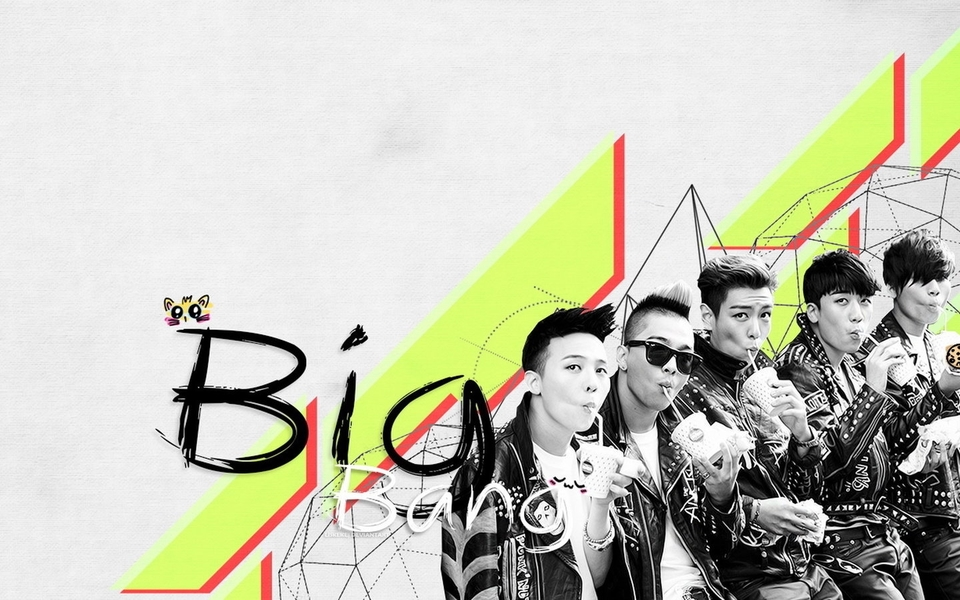
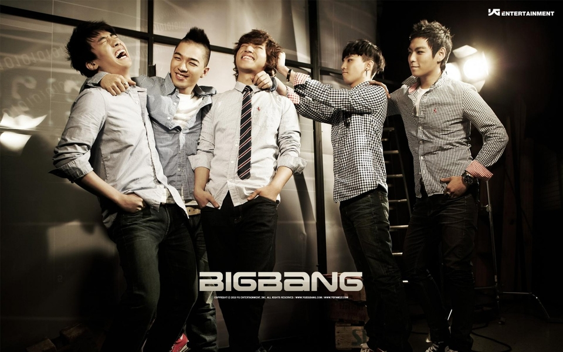

Bigbang 韩文写法：빅뱅 国籍：韩国 职业：歌手，唱片制作人，演员 经纪公司：YG Entertainment 代表作品：谎言，最后的问候， 一天一天，Tonight，Blue， 主要成就：2007首尔歌谣大赏-大赏 <&音源奖 2007MKMF颁奖礼-年度歌曲&编曲 2007MKMF颁奖礼-最佳男子组合赏 2008MKMF颁奖礼-最佳男子组合赏 2008MKMF颁奖礼-年度歌手大赏展 开 出道日期：2006年8月19日 |
Bigbang是于2006年出道的韩国组合 ，由队长权志龙、崔胜贤、东永裴、姜大声、李胜贤五位成员组成。 2006年8月19日，Bigbang在YG Family世界巡回演唱会首尔站上正式出道，并于同年12月22日发行首张正规专辑《BIGBANGVOL.1 SINCE2007》。2007年5月，Bigbang开始进行全国巡回演唱会，并于7月推出了第一张迷你专辑《谎言》。2011年，BigBang成为历史上第一个获得MTV 欧洲音乐大奖“Worldwide Act”的亚洲组合，并于2012年上半年登上美国格莱美官方网页，成为首个被格莱美介绍的韩国歌手。 Bigbang五位成员G-Dragon、TaeYang、SeungRi、DaeSung和TOP在小学六年级时便加入YG，然后一直接受严格训练。之后，Bigbang被选中作为Se7en的伴舞，接受Se7en的训练 特别消息韩国《Star News》5月22日消息，21日晚播出的KBS 2TV电视台“Happy Together3”里，Bigbang的全体成员TOP，权志龙、大成、胜利都参加了当天的节目。在这期的Happy Together3里，成员们都一次性爽快道出了心里话，不仅给当天的节目增添了许多乐趣，也给观众们展现了一个更加平易近人的邻家偶像。 Bigbang成员的爆料并不带有恶意。他们主要对名人们不曾展现在大众面前的日常一幕，也就是YG老总杨玄石的日常进行了轻松的吐槽。G.D说道，以前杨玄石经常只是在办公室里办公但是现在频频出现在各种电视节目上，吐槽“老总好像犯了艺人病”。除了权志龙，TOP，胜利，大成和太阳也像一直在等待这个机会吐槽似的，纷纷道出了老总的各类日常。 |